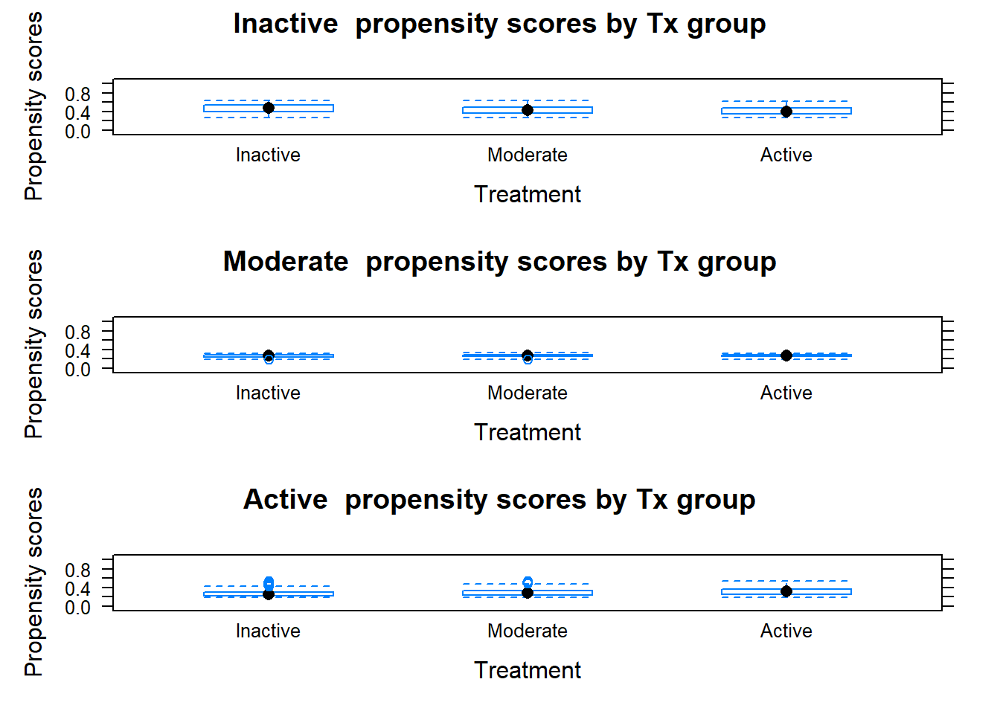
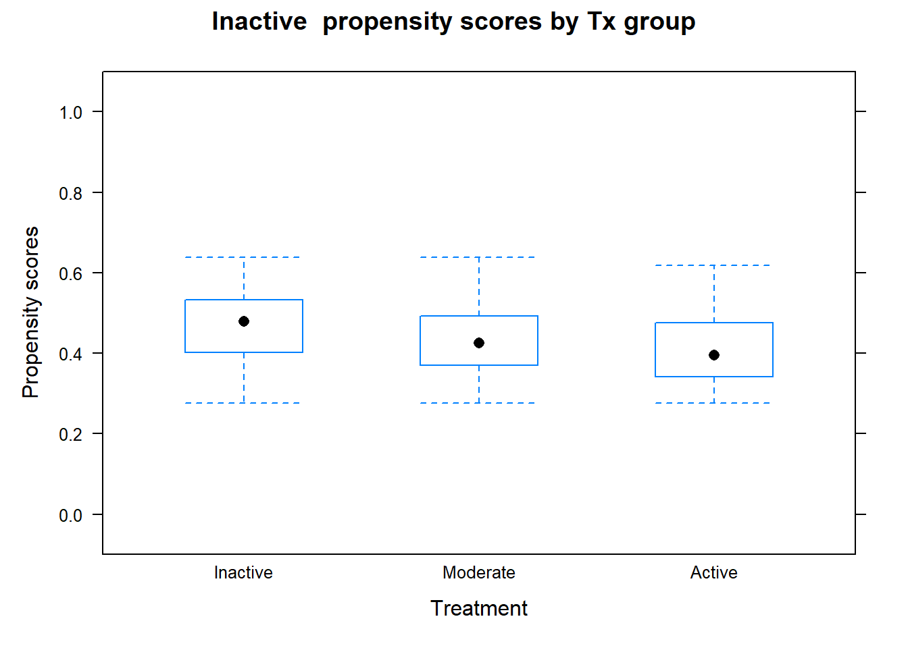
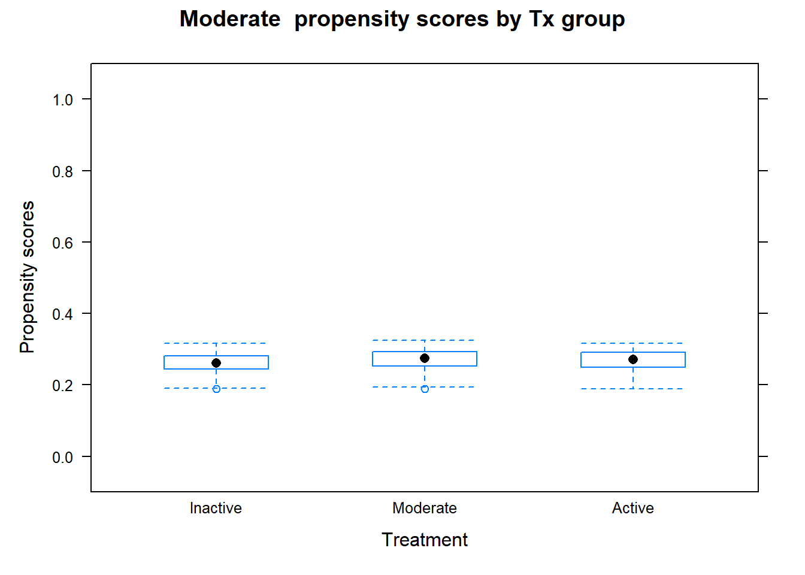
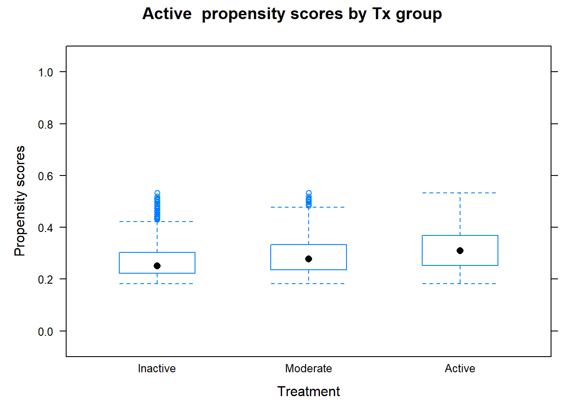

PSW with multiple tx
Problem
In this chapter, we will use propensity score weighting (PSW) for multiple treatment categories. We will use CCHS data that was used in the previous chapter on exact matching with CCHS.
Load data
Let us import the dataset:
-
analytic.miss: Full dataset of 397,173 participants from CCHS cycles 1.1, 2.1, and 3.1 with missing values in some covariates -
analytic2: Analytic dataset of 185,613 participants without missing in the covariates.
Pre-processing
Let us create the full and analytic datasets for only CCHS 3.1.
We will use the analytic dataset (dat.analytic) to run our PSW analysis with the following variables: - Outcome: CVD - Exposure: phyact (3-level physical activity) - Covariates: age, sex, married (marital status), race, edu (education), income, bmi (body mass index), doctor (whether visited to a doctor), stress, smoke, drink (drink alcohol or not), fruit (fruit consumption), bp (blood pressure), diab (diabetes), OA (osteoarthritis), immigrate (immigrant or not)
- Sampling weight: weight
# Is there any character variable?
str(dat.analytic)
#> 'data.frame': 39634 obs. of 22 variables:
#> $ CVD : chr "no event" "no event" "no event" "no event" ...
#> $ age : chr "20-29 years" "65 years and over" "20-29 years" "20-29 years" ...
#> $ sex : chr "Male" "Female" "Male" "Female" ...
#> $ married : chr "not single" "single" "single" "single" ...
#> $ race : chr "White" "White" "White" "White" ...
#> $ edu : chr "2nd grad." "Post-2nd grad." "2nd grad." "Other 2nd grad." ...
#> $ income : chr "$50,000-$79,999" "$29,999 or less" "$29,999 or less" "$50,000-$79,999" ...
#> $ bmi : Factor w/ 3 levels "Underweight",..: 3 2 2 2 2 3 2 3 3 2 ...
#> $ phyact : chr "Inactive" "Moderate" "Active" "Moderate" ...
#> $ doctor : chr "Yes" "Yes" "Yes" "No" ...
#> $ stress : chr "Not too stressed" "Not too stressed" "Not too stressed" "Not too stressed" ...
#> $ smoke : chr "Former smoker" "Never smoker" "Never smoker" "Never smoker" ...
#> $ drink : chr "Current drinker" "Former driker" "Never drank" "Current drinker" ...
#> $ fruit : Factor w/ 3 levels "0-3 daily serving",..: 2 2 1 1 3 2 2 2 2 3 ...
#> $ bp : chr "No" "No" "No" "No" ...
#> $ diab : chr "No" "No" "No" "No" ...
#> $ province : chr "South" "South" "South" "South" ...
#> $ weight : num 93.5 111.4 120.4 328.2 810.6 ...
#> $ cycle : Factor w/ 3 levels "11","21","31": 3 3 3 3 3 3 3 3 3 3 ...
#> $ ID : int 264953 264954 264961 264962 264963 264964 264969 264971 264975 264976 ...
#> $ OA : chr "Control" "OA" "Control" "Control" ...
#> $ immigrate: chr "not immigrant" "not immigrant" "not immigrant" "not immigrant" ...
# Make all variables (except for ID and weight) as factor
var.names <- c("CVD", "phyact", "age", "sex", "married", "race", "edu", "income", "bmi", "doctor",
"stress", "smoke", "drink", "fruit", "bp", "diab", "province", "OA", "immigrate")
dat.full[var.names] <- lapply(dat.full[var.names] , factor)
dat.analytic[var.names] <- lapply(dat.analytic[var.names], factor)
# Outcome - CVD
table(dat.analytic$CVD, useNA = "always")
#>
#> event no event <NA>
#> 1931 37703 0
dat.full$CVD <- car::recode(dat.full$CVD, "'no event' = 'No'; 'event' = 'Yes'; else = NA ")
dat.full$CVD <- factor(dat.full$CVD, levels = c("No", "Yes"))
dat.analytic$CVD <- car::recode(dat.analytic$CVD, "'no event' = 'No'; 'event' = 'Yes'; else = NA ")
dat.analytic$CVD <- factor(dat.analytic$CVD, levels = c("No", "Yes"))
table(dat.analytic$CVD, useNA = "always")
#>
#> No Yes <NA>
#> 37703 1931 0
# Exposure - physical activity
table(dat.analytic$phyact, useNA = "always")
#>
#> Active Inactive Moderate <NA>
#> 11508 17569 10557 0
dat.full$phyact <- factor(dat.full$phyact, levels = c("Inactive", "Moderate", "Active"))
dat.analytic$phyact <- factor(dat.analytic$phyact, levels = c("Inactive", "Moderate", "Active"))
# Table 1
vars <- c("age", "sex", "married", "race", "edu", "income", "bmi", "doctor", "stress",
"smoke", "drink", "fruit", "bp", "diab", "OA", "immigrate")
tab1 <- CreateTableOne(vars = vars, strata = "phyact", data = dat.analytic, test = F)
print(tab1, smd = T, showAllLevels = T)
#> Stratified by phyact
#> level Inactive Moderate Active
#> n 17569 10557 11508
#> age (%) 20-29 years 2537 (14.4) 1709 (16.2) 2316 (20.1)
#> 30-39 years 3526 (20.1) 2265 (21.5) 2276 (19.8)
#> 40-49 years 3270 (18.6) 1939 (18.4) 2037 (17.7)
#> 50-59 years 2901 (16.5) 1659 (15.7) 1480 (12.9)
#> 60-64 years 1130 ( 6.4) 665 ( 6.3) 570 ( 5.0)
#> 65 years and over 3310 (18.8) 1568 (14.9) 1183 (10.3)
#> teen 895 ( 5.1) 752 ( 7.1) 1646 (14.3)
#> sex (%) Female 9403 (53.5) 5709 (54.1) 5526 (48.0)
#> Male 8166 (46.5) 4848 (45.9) 5982 (52.0)
#> married (%) not single 9600 (54.6) 5920 (56.1) 5637 (49.0)
#> single 7969 (45.4) 4637 (43.9) 5871 (51.0)
#> race (%) Non-white 1757 (10.0) 886 ( 8.4) 1066 ( 9.3)
#> White 15812 (90.0) 9671 (91.6) 10442 (90.7)
#> edu (%) < 2ndary 3690 (21.0) 1635 (15.5) 2039 (17.7)
#> 2nd grad. 3246 (18.5) 1749 (16.6) 1845 (16.0)
#> Other 2nd grad. 1566 ( 8.9) 969 ( 9.2) 1150 (10.0)
#> Post-2nd grad. 9067 (51.6) 6204 (58.8) 6474 (56.3)
#> income (%) $29,999 or less 4480 (25.5) 1929 (18.3) 1906 (16.6)
#> $30,000-$49,999 4018 (22.9) 2059 (19.5) 2097 (18.2)
#> $50,000-$79,999 4512 (25.7) 2974 (28.2) 3095 (26.9)
#> $80,000 or more 4559 (25.9) 3595 (34.1) 4410 (38.3)
#> bmi (%) Underweight 532 ( 3.0) 243 ( 2.3) 340 ( 3.0)
#> healthy weight 7349 (41.8) 5023 (47.6) 6233 (54.2)
#> Overweight 9688 (55.1) 5291 (50.1) 4935 (42.9)
#> doctor (%) No 2322 (13.2) 1272 (12.0) 1520 (13.2)
#> Yes 15247 (86.8) 9285 (88.0) 9988 (86.8)
#> stress (%) Not too stressed 13544 (77.1) 8371 (79.3) 9314 (80.9)
#> stressed 4025 (22.9) 2186 (20.7) 2194 (19.1)
#> smoke (%) Current smoker 5032 (28.6) 2386 (22.6) 2488 (21.6)
#> Former smoker 6900 (39.3) 4562 (43.2) 4672 (40.6)
#> Never smoker 5637 (32.1) 3609 (34.2) 4348 (37.8)
#> drink (%) Current drinker 13913 (79.2) 9016 (85.4) 9863 (85.7)
#> Former driker 2582 (14.7) 1102 (10.4) 1063 ( 9.2)
#> Never drank 1074 ( 6.1) 439 ( 4.2) 582 ( 5.1)
#> fruit (%) 0-3 daily serving 5610 (31.9) 2270 (21.5) 1902 (16.5)
#> 4-6 daily serving 8827 (50.2) 5445 (51.6) 5481 (47.6)
#> 6+ daily serving 3132 (17.8) 2842 (26.9) 4125 (35.8)
#> bp (%) No 14188 (80.8) 8976 (85.0) 10349 (89.9)
#> Yes 3381 (19.2) 1581 (15.0) 1159 (10.1)
#> diab (%) No 16393 (93.3) 10114 (95.8) 11165 (97.0)
#> Yes 1176 ( 6.7) 443 ( 4.2) 343 ( 3.0)
#> OA (%) Control 14864 (84.6) 9310 (88.2) 10565 (91.8)
#> OA 2705 (15.4) 1247 (11.8) 943 ( 8.2)
#> immigrate (%) not immigrant 16557 (94.2) 10150 (96.1) 11098 (96.4)
#> recent 1012 ( 5.8) 407 ( 3.9) 410 ( 3.6)
#> Stratified by phyact
#> SMD
#> n
#> age (%) 0.285
#>
#>
#>
#>
#>
#>
#> sex (%) 0.081
#>
#> married (%) 0.095
#>
#> race (%) 0.037
#>
#> edu (%) 0.119
#>
#>
#>
#> income (%) 0.213
#>
#>
#>
#> bmi (%) 0.173
#>
#>
#> doctor (%) 0.023
#>
#> stress (%) 0.063
#>
#> smoke (%) 0.129
#>
#>
#> drink (%) 0.133
#>
#>
#> fruit (%) 0.323
#>
#>
#> bp (%) 0.175
#>
#> diab (%) 0.116
#>
#> OA (%) 0.150
#>
#> immigrate (%) 0.070
#> PSW for multiple tx
Nominal categories (option 1)
For this part (option 1), we consider physical activity as a nominal variable.
Estimating Propensity score
Let us fit the PS model by considering physical activity as a nominal variable and estimate the propensity scores:
# Formula
ps.formula <- formula(phyact ~ age + sex + married + race + edu + income + bmi +
doctor + stress + smoke + drink + fruit + bp + diab +
OA + immigrate)
# PS model
library(VGAM)
#> Warning: package 'VGAM' was built under R version 4.2.3
#> Loading required package: stats4
#> Loading required package: splines
#>
#> Attaching package: 'VGAM'
#> The following object is masked from 'package:survey':
#>
#> calibrate
ps.fit <- vglm(ps.formula, weights = weight, data = dat.analytic,
family = multinomial(parallel = FALSE))
# Propensity scores
ps <- data.frame(fitted(ps.fit))
head(ps)
# Summary
apply(ps, 2, summary)
#> Inactive Moderate Active
#> Min. 0.06879258 0.07957314 0.0285961
#> 1st Qu. 0.34233334 0.23371928 0.1867680
#> Median 0.44756388 0.27020295 0.2634537
#> Mean 0.44778510 0.26768926 0.2845256
#> 3rd Qu. 0.55452938 0.30446807 0.3616572
#> Max. 0.89058237 0.39864744 0.7524817Creating weights
Let us create PS weights. For subject \(i\), PS weight is calculated as
\[w_i = \frac{1}{P(A_i = a|L)}, \] where \(A\) is the exposure with levels \(a\) (Inactive, Moderate, and Active in our case), and \(L\) is the list of covariates.
# IPW
dat.analytic$ipw <- ifelse(dat.analytic$phyact=="Active", 1/ps$Active,
ifelse(dat.analytic$phyact=="Moderate", 1/ps$Moderate,
1/ps$Inactive))
with(dat.analytic, by(ipw, phyact, summary))
#> phyact: Inactive
#> Min. 1st Qu. Median Mean 3rd Qu. Max.
#> 1.123 1.671 1.994 2.233 2.505 14.536
#> ------------------------------------------------------------
#> phyact: Moderate
#> Min. 1st Qu. Median Mean 3rd Qu. Max.
#> 2.508 3.206 3.576 3.743 4.087 11.695
#> ------------------------------------------------------------
#> phyact: Active
#> Min. 1st Qu. Median Mean 3rd Qu. Max.
#> 1.329 2.310 3.086 3.534 4.225 25.049Balance checking
Now, we will check the balance in terms of SMD:
library(survey)
vars <- c("age", "sex", "married", "race", "edu", "income", "bmi", "doctor", "stress",
"smoke", "drink", "fruit", "bp", "diab", "OA", "immigrate")
# Design
w.design <- svydesign(id = ~1, weights = ~ipw, data = dat.analytic)
# Table 1
tabw <- svyCreateTableOne(vars = vars, strata = "phyact", data = w.design, test = F)
print(tabw, smd = T, showAllLevels = T)
#> Stratified by phyact
#> level Inactive Moderate
#> n 39231.2 39519.8
#> age (%) 20-29 years 6477.4 (16.5) 6856.1 (17.3)
#> 30-39 years 7706.8 (19.6) 8174.8 (20.7)
#> 40-49 years 7098.2 (18.1) 7163.0 (18.1)
#> 50-59 years 5922.4 (15.1) 5901.2 (14.9)
#> 60-64 years 2414.8 ( 6.2) 2265.4 ( 5.7)
#> 65 years and over 6187.1 (15.8) 5843.8 (14.8)
#> teen 3424.6 ( 8.7) 3315.4 ( 8.4)
#> sex (%) Female 20188.3 (51.5) 20693.4 (52.4)
#> Male 19042.9 (48.5) 18826.3 (47.6)
#> married (%) not single 20665.9 (52.7) 20907.0 (52.9)
#> single 18565.3 (47.3) 18612.8 (47.1)
#> race (%) Non-white 3471.9 ( 8.8) 4095.5 (10.4)
#> White 35759.3 (91.2) 35424.2 (89.6)
#> edu (%) < 2ndary 7267.3 (18.5) 7288.2 (18.4)
#> 2nd grad. 6902.6 (17.6) 6901.3 (17.5)
#> Other 2nd grad. 3783.0 ( 9.6) 3671.6 ( 9.3)
#> Post-2nd grad. 21278.3 (54.2) 21658.7 (54.8)
#> income (%) $29,999 or less 8432.3 (21.5) 8425.7 (21.3)
#> $30,000-$49,999 8115.6 (20.7) 8109.8 (20.5)
#> $50,000-$79,999 10169.1 (25.9) 10602.5 (26.8)
#> $80,000 or more 12514.2 (31.9) 12381.9 (31.3)
#> bmi (%) Underweight 1092.7 ( 2.8) 1110.6 ( 2.8)
#> healthy weight 18191.1 (46.4) 18613.7 (47.1)
#> Overweight 19947.4 (50.8) 19795.5 (50.1)
#> doctor (%) No 5073.1 (12.9) 5127.6 (13.0)
#> Yes 34158.1 (87.1) 34392.2 (87.0)
#> stress (%) Not too stressed 30921.0 (78.8) 31245.6 (79.1)
#> stressed 8310.3 (21.2) 8274.2 (20.9)
#> smoke (%) Current smoker 10018.8 (25.5) 10121.1 (25.6)
#> Former smoker 15860.1 (40.4) 15737.2 (39.8)
#> Never smoker 13352.4 (34.0) 13661.5 (34.6)
#> drink (%) Current drinker 32257.4 (82.2) 32836.4 (83.1)
#> Former driker 4857.5 (12.4) 4621.5 (11.7)
#> Never drank 2116.4 ( 5.4) 2061.9 ( 5.2)
#> fruit (%) 0-3 daily serving 9738.2 (24.8) 9786.2 (24.8)
#> 4-6 daily serving 19523.6 (49.8) 19803.8 (50.1)
#> 6+ daily serving 9969.4 (25.4) 9929.8 (25.1)
#> bp (%) No 33045.9 (84.2) 33662.1 (85.2)
#> Yes 6185.3 (15.8) 5857.7 (14.8)
#> diab (%) No 37227.0 (94.9) 37572.5 (95.1)
#> Yes 2004.2 ( 5.1) 1947.3 ( 4.9)
#> OA (%) Control 34297.7 (87.4) 34835.2 (88.1)
#> OA 4933.5 (12.6) 4684.6 (11.9)
#> immigrate (%) not immigrant 37503.8 (95.6) 37532.8 (95.0)
#> recent 1727.4 ( 4.4) 1987.0 ( 5.0)
#> Stratified by phyact
#> Active SMD
#> n 40667.9
#> age (%) 6467.5 (15.9) 0.046
#> 8588.7 (21.1)
#> 7538.2 (18.5)
#> 6327.6 (15.6)
#> 2420.1 ( 6.0)
#> 5989.1 (14.7)
#> 3336.8 ( 8.2)
#> sex (%) 21026.2 (51.7) 0.012
#> 19641.7 (48.3)
#> married (%) 22651.2 (55.7) 0.040
#> 18016.8 (44.3)
#> race (%) 3834.0 ( 9.4) 0.034
#> 36834.0 (90.6)
#> edu (%) 7395.4 (18.2) 0.023
#> 6825.8 (16.8)
#> 3765.2 ( 9.3)
#> 22681.6 (55.8)
#> income (%) 8029.8 (19.7) 0.041
#> 8544.1 (21.0)
#> 11407.3 (28.0)
#> 12686.7 (31.2)
#> bmi (%) 1241.6 ( 3.1) 0.017
#> 19120.5 (47.0)
#> 20305.8 (49.9)
#> doctor (%) 5272.7 (13.0) 0.001
#> 35395.3 (87.0)
#> stress (%) 32100.6 (78.9) 0.004
#> 8567.4 (21.1)
#> smoke (%) 9760.6 (24.0) 0.032
#> 17024.0 (41.9)
#> 13883.4 (34.1)
#> drink (%) 33927.5 (83.4) 0.022
#> 4634.1 (11.4)
#> 2106.3 ( 5.2)
#> fruit (%) 10170.0 (25.0) 0.007
#> 20200.6 (49.7)
#> 10297.3 (25.3)
#> bp (%) 34372.4 (84.5) 0.017
#> 6295.6 (15.5)
#> diab (%) 38850.3 (95.5) 0.020
#> 1817.7 ( 4.5)
#> OA (%) 35666.9 (87.7) 0.015
#> 5001.1 (12.3)
#> immigrate (%) 38662.6 (95.1) 0.020
#> 2005.4 ( 4.9)All covariates are balanced in terms of SMD (SMD \(\le\) 0.20).
Outcome analysis
Now, we will fit the outcome model. To get the correct estimate of the standard error, we will set up the design with full data and subset the design.
# Create an indicator variable in the full dataset
dat.full$ind <- 0
dat.full$ind[dat.full$ID %in% dat.analytic$ID] <- 1
# New weight = IPW * survey weight
dat.analytic$ATEweight <- with(dat.analytic, ipw * weight)
# New weight variable in the full dataset
dat.full$ATEweight <- 0
dat.full$ATEweight[dat.full$ID %in% dat.analytic$ID] <- dat.analytic$ATEweight
# Survey setup with full data
w.design0 <- svydesign(id = ~1, weights = ~ATEweight, data = dat.full)
# Subset the design for analytic sample
w.design1 <- subset(w.design0, ind == 1)
# Weighted proportion
w.prop <- svyby(formula = ~CVD, by = ~phyact, design = w.design1, FUN = svymean)
w.propOrdinal categories (for comparison)
For comparison, let us consider physical activity as a ordinal variable (option 2).
Define ordinal variable
# Exposure - ordinal physical activity
dat.full$phyact.ord <- factor(dat.full$phyact, levels = c("Inactive", "Moderate", "Active"),
ordered = T)
dat.analytic$phyact.ord <- factor(dat.analytic$phyact,
levels = c("Inactive", "Moderate", "Active"), ordered = T)
head(dat.analytic$phyact.ord)
#> [1] Inactive Moderate Active Moderate Active Active
#> Levels: Inactive < Moderate < ActiveEstimating Propensity score
# Formula
ps.formula2 <- formula(phyact.ord ~ age + sex + married + race + edu + income + bmi +
doctor + stress + smoke + drink + fruit + bp + diab +
OA + immigrate)
# PS model
library(VGAM)
ps.fit2 <- vglm(ps.formula2, weights = weight, data = dat.analytic, family = propodds)
# Propensity scores
ps2 <- data.frame(fitted(ps.fit2))
head(ps2)
# Summary
apply(ps2, 2, summary)
#> Inactive Moderate Active
#> Min. 0.07517679 0.07505615 0.03456101
#> 1st Qu. 0.34108922 0.25002048 0.18907940
#> Median 0.44711595 0.28026693 0.26446898
#> Mean 0.44780744 0.26682382 0.28536874
#> 3rd Qu. 0.55497781 0.29473347 0.35967960
#> Max. 0.89038285 0.29934482 0.78152250Creating weights
Let us create PS weights:
# IPW
dat.analytic$ipw2 <- ifelse(dat.analytic$phyact=="Active", 1/ps2$Active,
ifelse(dat.analytic$phyact=="Moderate", 1/ps2$Moderate,
1/ps2$Inactive))
with(dat.analytic, by(ipw2, phyact.ord, summary))
#> phyact.ord: Inactive
#> Min. 1st Qu. Median Mean 3rd Qu. Max.
#> 1.123 1.668 2.001 2.237 2.516 13.302
#> ------------------------------------------------------------
#> phyact.ord: Moderate
#> Min. 1st Qu. Median Mean 3rd Qu. Max.
#> 3.341 3.382 3.525 3.748 3.875 11.248
#> ------------------------------------------------------------
#> phyact.ord: Active
#> Min. 1st Qu. Median Mean 3rd Qu. Max.
#> 1.280 2.319 3.073 3.504 4.211 19.768Balance checking
Now, we will check the balance in terms of SMD:
library(survey)
vars <- c("age", "sex", "married", "race", "edu", "income", "bmi", "doctor", "stress",
"smoke", "drink", "fruit", "bp", "diab", "OA", "immigrate")
# Design
w.design <- svydesign(id = ~1, weights = ~ipw2, data = dat.analytic)
# Table 1
tabw2 <- svyCreateTableOne(vars = vars, strata = "phyact", data = w.design, test = F)
print(tabw2, smd = T, showAllLevels = T)
#> Stratified by phyact
#> level Inactive Moderate
#> n 39305.5 39566.3
#> age (%) 20-29 years 6679.4 (17.0) 6125.6 (15.5)
#> 30-39 years 7635.7 (19.4) 8357.8 (21.1)
#> 40-49 years 7085.9 (18.0) 7124.1 (18.0)
#> 50-59 years 5820.8 (14.8) 6307.9 (15.9)
#> 60-64 years 2339.1 ( 6.0) 2494.0 ( 6.3)
#> 65 years and over 6108.9 (15.5) 6264.9 (15.8)
#> teen 3635.8 ( 9.3) 2892.0 ( 7.3)
#> sex (%) Female 19987.1 (50.9) 21622.5 (54.6)
#> Male 19318.4 (49.1) 17943.8 (45.4)
#> married (%) not single 20342.7 (51.8) 22151.4 (56.0)
#> single 18962.9 (48.2) 17414.9 (44.0)
#> race (%) Non-white 3595.2 ( 9.1) 3507.2 ( 8.9)
#> White 35710.4 (90.9) 36059.1 (91.1)
#> edu (%) < 2ndary 7467.4 (19.0) 6739.9 (17.0)
#> 2nd grad. 7027.3 (17.9) 6644.2 (16.8)
#> Other 2nd grad. 3815.2 ( 9.7) 3628.7 ( 9.2)
#> Post-2nd grad. 20995.6 (53.4) 22553.5 (57.0)
#> income (%) $29,999 or less 8596.0 (21.9) 7724.2 (19.5)
#> $30,000-$49,999 8182.3 (20.8) 7888.9 (19.9)
#> $50,000-$79,999 10126.1 (25.8) 11034.9 (27.9)
#> $80,000 or more 12401.1 (31.6) 12918.3 (32.6)
#> bmi (%) Underweight 1134.1 ( 2.9) 960.4 ( 2.4)
#> healthy weight 18284.0 (46.5) 18426.4 (46.6)
#> Overweight 19887.4 (50.6) 20179.5 (51.0)
#> doctor (%) No 5183.0 (13.2) 4741.2 (12.0)
#> Yes 34122.5 (86.8) 34825.0 (88.0)
#> stress (%) Not too stressed 31032.0 (79.0) 31233.5 (78.9)
#> stressed 8273.6 (21.0) 8332.8 (21.1)
#> smoke (%) Current smoker 10263.8 (26.1) 9253.9 (23.4)
#> Former smoker 15572.0 (39.6) 16822.9 (42.5)
#> Never smoker 13469.8 (34.3) 13489.4 (34.1)
#> drink (%) Current drinker 32206.8 (81.9) 33304.9 (84.2)
#> Former driker 4898.9 (12.5) 4438.8 (11.2)
#> Never drank 2199.8 ( 5.6) 1822.5 ( 4.6)
#> fruit (%) 0-3 daily serving 9841.8 (25.0) 9509.3 (24.0)
#> 4-6 daily serving 19586.3 (49.8) 19922.3 (50.4)
#> 6+ daily serving 9877.5 (25.1) 10134.7 (25.6)
#> bp (%) No 33233.3 (84.6) 33115.0 (83.7)
#> Yes 6072.2 (15.4) 6451.2 (16.3)
#> diab (%) No 37292.2 (94.9) 37648.3 (95.2)
#> Yes 2013.4 ( 5.1) 1918.0 ( 4.8)
#> OA (%) Control 34458.3 (87.7) 34493.7 (87.2)
#> OA 4847.3 (12.3) 5072.6 (12.8)
#> immigrate (%) not immigrant 37534.6 (95.5) 37816.7 (95.6)
#> recent 1770.9 ( 4.5) 1749.5 ( 4.4)
#> Stratified by phyact
#> Active SMD
#> n 40328.5
#> age (%) 6789.1 (16.8) 0.080
#> 8504.7 (21.1)
#> 7562.1 (18.8)
#> 6079.6 (15.1)
#> 2283.6 ( 5.7)
#> 5614.4 (13.9)
#> 3495.0 ( 8.7)
#> sex (%) 20379.8 (50.5) 0.055
#> 19948.8 (49.5)
#> married (%) 21840.5 (54.2) 0.057
#> 18488.0 (45.8)
#> race (%) 4125.6 (10.2) 0.031
#> 36202.9 (89.8)
#> edu (%) 7564.8 (18.8) 0.052
#> 6886.8 (17.1)
#> 3777.5 ( 9.4)
#> 22099.4 (54.8)
#> income (%) 8371.7 (20.8) 0.056
#> 8581.4 (21.3)
#> 11013.7 (27.3)
#> 12361.7 (30.7)
#> bmi (%) 1294.7 ( 3.2) 0.037
#> 19134.4 (47.4)
#> 19899.5 (49.3)
#> doctor (%) 5467.9 (13.6) 0.031
#> 34860.6 (86.4)
#> stress (%) 31816.9 (78.9) 0.001
#> 8511.6 (21.1)
#> smoke (%) 10153.3 (25.2) 0.048
#> 16300.6 (40.4)
#> 13874.6 (34.4)
#> drink (%) 33415.6 (82.9) 0.043
#> 4714.1 (11.7)
#> 2198.9 ( 5.5)
#> fruit (%) 10190.6 (25.3) 0.020
#> 19953.3 (49.5)
#> 10184.6 (25.3)
#> bp (%) 34557.1 (85.7) 0.037
#> 5771.5 (14.3)
#> diab (%) 38519.4 (95.5) 0.020
#> 1809.1 ( 4.5)
#> OA (%) 35641.0 (88.4) 0.024
#> 4687.5 (11.6)
#> immigrate (%) 38153.4 (94.6) 0.030
#> 2175.2 ( 5.4)Again, all covariates are balanced in terms of SMD.
Outcome analysis
Now, we will fit the outcome model:
# Create an indicator variable in the full dataset
dat.full$ind <- 0
dat.full$ind[dat.full$ID %in% dat.analytic$ID] <- 1
# New weight = IPW * survey weight
dat.analytic$ATEweight2 <- with(dat.analytic, ipw2 * weight)
# New weight variable in the full dataset
dat.full$ATEweight2 <- 0
dat.full$ATEweight2[dat.full$ID %in% dat.analytic$ID] <- dat.analytic$ATEweight2
# Survey setup with full data
w.design0 <- svydesign(id = ~1, weights = ~ATEweight2, data = dat.full)
# Subset the design for analytic sample
w.design1 <- subset(w.design0, ind == 1)
# Weighted proportion
w.prop2 <- svyby(formula = ~CVD, by = ~phyact, design = w.design1, FUN = svymean)
w.prop2Machine learning / GBM (option 3)
In this part, we will use Gradient Boosting as one of the machine learning techniques to estimate the propensity scores.
Estimating Propensity score
# Formula
ps.formula3 <- formula(phyact.ord ~ age + sex + married + race + edu + income + bmi +
doctor + stress + smoke + drink + fruit + bp + diab +
OA + immigrate)
# PS model
pacman::p_load(twang)
set.seed(123)
ps.fit3 <- mnps(ps.formula3, data = dat.analytic, estimand = "ATE", verbose = FALSE,
stop.method = c("es.max"), n.trees = 200, sampw = dat.analytic$weight)
summary(ps.fit3)
#> Summary of pairwise comparisons:
#> max.std.eff.sz min.p max.ks min.ks.pval stop.method
#> 1 0.4134866 0 1 0 unw
#> 2 0.1880231 0 1 0 es.max
#>
#> Sample sizes and effective sample sizes:
#> treatment n ESS:es.max
#> 1 Inactive 17569 7361.137
#> 2 Moderate 10557 4875.807
#> 3 Active 11508 5376.500Creating weights
Let us create PS weights:
# IPW
dat.analytic$ipw3 <- ifelse(dat.analytic$phyact=="Active", 1/ps3$Active,
ifelse(dat.analytic$phyact=="Moderate", 1/ps3$Moderate,
1/ps3$Inactive))
with(dat.analytic, by(ipw3, phyact, summary))
#> phyact: Inactive
#> Min. 1st Qu. Median Mean 3rd Qu. Max.
#> 1.565 1.877 2.086 2.206 2.484 3.624
#> ------------------------------------------------------------
#> phyact: Moderate
#> Min. 1st Qu. Median Mean 3rd Qu. Max.
#> 3.072 3.415 3.652 3.709 3.947 5.306
#> ------------------------------------------------------------
#> phyact: Active
#> Min. 1st Qu. Median Mean 3rd Qu. Max.
#> 1.876 2.716 3.229 3.320 3.952 5.465Weights are not large compared to options 1 and 2.
Balance checking
Now, we will check the balance in terms of SMD:
library(survey)
vars <- c("age", "sex", "married", "race", "edu", "income", "bmi", "doctor", "stress",
"smoke", "drink", "fruit", "bp", "diab", "OA", "immigrate")
# Design
w.design <- svydesign(id = ~1, weights = ~ipw3, data = dat.analytic)
# Table 1
tabw <- svyCreateTableOne(vars = vars, strata = "phyact", data = w.design, test = F)
print(tabw, smd = T, showAllLevels = T)
#> Stratified by phyact
#> level Inactive Moderate
#> n 38763.2 39159.6
#> age (%) 20-29 years 6086.5 (15.7) 6641.5 (17.0)
#> 30-39 years 7624.6 (19.7) 8171.6 (20.9)
#> 40-49 years 7057.4 (18.2) 7073.0 (18.1)
#> 50-59 years 6267.5 (16.2) 5894.9 (15.1)
#> 60-64 years 2399.6 ( 6.2) 2390.7 ( 6.1)
#> 65 years and over 6883.8 (17.8) 5859.8 (15.0)
#> teen 2443.7 ( 6.3) 3128.1 ( 8.0)
#> sex (%) Female 20928.4 (54.0) 21097.6 (53.9)
#> Male 17834.8 (46.0) 18062.0 (46.1)
#> married (%) not single 21244.6 (54.8) 21279.5 (54.3)
#> single 17518.5 (45.2) 17880.1 (45.7)
#> race (%) Non-white 3683.4 ( 9.5) 3666.8 ( 9.4)
#> White 35079.7 (90.5) 35492.8 (90.6)
#> edu (%) < 2ndary 7610.9 (19.6) 6692.3 (17.1)
#> 2nd grad. 7088.9 (18.3) 6693.3 (17.1)
#> Other 2nd grad. 3558.1 ( 9.2) 3619.6 ( 9.2)
#> Post-2nd grad. 20505.3 (52.9) 22154.2 (56.6)
#> income (%) $29,999 or less 9138.3 (23.6) 7750.6 (19.8)
#> $30,000-$49,999 8400.8 (21.7) 7956.3 (20.3)
#> $50,000-$79,999 9946.0 (25.7) 10696.8 (27.3)
#> $80,000 or more 11278.0 (29.1) 12755.9 (32.6)
#> bmi (%) Underweight 1195.7 ( 3.1) 967.7 ( 2.5)
#> healthy weight 16766.4 (43.3) 18791.6 (48.0)
#> Overweight 20801.0 (53.7) 19400.2 (49.5)
#> doctor (%) No 5070.5 (13.1) 4827.3 (12.3)
#> Yes 33692.7 (86.9) 34332.3 (87.7)
#> stress (%) Not too stressed 29885.7 (77.1) 31099.5 (79.4)
#> stressed 8877.5 (22.9) 8060.0 (20.6)
#> smoke (%) Current smoker 10737.3 (27.7) 9401.4 (24.0)
#> Former smoker 15204.3 (39.2) 16211.3 (41.4)
#> Never smoker 12821.5 (33.1) 13546.9 (34.6)
#> drink (%) Current drinker 31123.7 (80.3) 33043.2 (84.4)
#> Former driker 5322.0 (13.7) 4301.7 (11.0)
#> Never drank 2317.5 ( 6.0) 1814.6 ( 4.6)
#> fruit (%) 0-3 daily serving 10529.0 (27.2) 8996.8 (23.0)
#> 4-6 daily serving 19466.5 (50.2) 19851.5 (50.7)
#> 6+ daily serving 8767.6 (22.6) 10311.3 (26.3)
#> bp (%) No 31712.5 (81.8) 33335.5 (85.1)
#> Yes 7050.7 (18.2) 5824.1 (14.9)
#> diab (%) No 36326.4 (93.7) 37499.3 (95.8)
#> Yes 2436.8 ( 6.3) 1660.2 ( 4.2)
#> OA (%) Control 33060.8 (85.3) 34579.5 (88.3)
#> OA 5702.3 (14.7) 4580.0 (11.7)
#> immigrate (%) not immigrant 36812.8 (95.0) 37425.9 (95.6)
#> recent 1950.3 ( 5.0) 1733.7 ( 4.4)
#> Stratified by phyact
#> Active SMD
#> n 38211.2
#> age (%) 6567.9 (17.2) 0.145
#> 8208.6 (21.5)
#> 7313.3 (19.1)
#> 5555.3 (14.5)
#> 2186.9 ( 5.7)
#> 4539.2 (11.9)
#> 3840.0 (10.0)
#> sex (%) 18441.4 (48.3) 0.077
#> 19769.8 (51.7)
#> married (%) 20012.7 (52.4) 0.033
#> 18198.5 (47.6)
#> race (%) 3397.2 ( 8.9) 0.014
#> 34814.0 (91.1)
#> edu (%) 6186.6 (16.2) 0.081
#> 6159.6 (16.1)
#> 3630.7 ( 9.5)
#> 22234.2 (58.2)
#> income (%) 6758.9 (17.7) 0.120
#> 7420.8 (19.4)
#> 10612.9 (27.8)
#> 13418.7 (35.1)
#> bmi (%) 1041.5 ( 2.7) 0.112
#> 19648.4 (51.4)
#> 17521.2 (45.9)
#> doctor (%) 5001.8 (13.1) 0.015
#> 33209.4 (86.9)
#> stress (%) 30845.7 (80.7) 0.059
#> 7365.5 (19.3)
#> smoke (%) 8531.3 (22.3) 0.083
#> 16200.7 (42.4)
#> 13479.2 (35.3)
#> drink (%) 32817.1 (85.9) 0.101
#> 3703.9 ( 9.7)
#> 1690.1 ( 4.4)
#> fruit (%) 7924.2 (20.7) 0.120
#> 19284.4 (50.5)
#> 11002.5 (28.8)
#> bp (%) 33698.1 (88.2) 0.120
#> 4513.1 (11.8)
#> diab (%) 36930.8 (96.6) 0.092
#> 1280.4 ( 3.4)
#> OA (%) 34640.5 (90.7) 0.110
#> 3570.7 ( 9.3)
#> immigrate (%) 36764.3 (96.2) 0.040
#> 1446.8 ( 3.8)All covariates are balanced in terms of SMD.

#> [[1]]
#>
#> [[2]]
#>
#> [[3]]
Outcome analysis
Now, we will fit the outcome model:
# Create an indicator variable in the full dataset
dat.full$ind <- 0
dat.full$ind[dat.full$ID %in% dat.analytic$ID] <- 1
# New weight = IPW * survey weight
dat.analytic$ATEweight3 <- with(dat.analytic, ipw3 * weight)
# New weight variable in the full dataset
dat.full$ATEweight3 <- 0
dat.full$ATEweight3[dat.full$ID %in% dat.analytic$ID] <- dat.analytic$ATEweight3
# Survey setup with full data
w.design0 <- svydesign(id = ~1, weights = ~ATEweight3, data = dat.full)
# Subset the design for analytic sample
w.design1 <- subset(w.design0, ind == 1)
# Weighted proportion
w.prop <- svyby(formula = ~CVD, by = ~phyact, design = w.design1, FUN = svymean)
w.propOther approches for multiple treatments
Not covered here, but possible to do in a multiple treatments context:
- Propensity score matching
- Propensity score stratification
- Marginal mean weighting